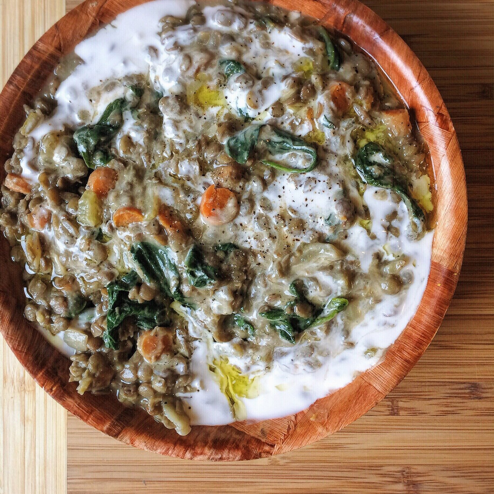
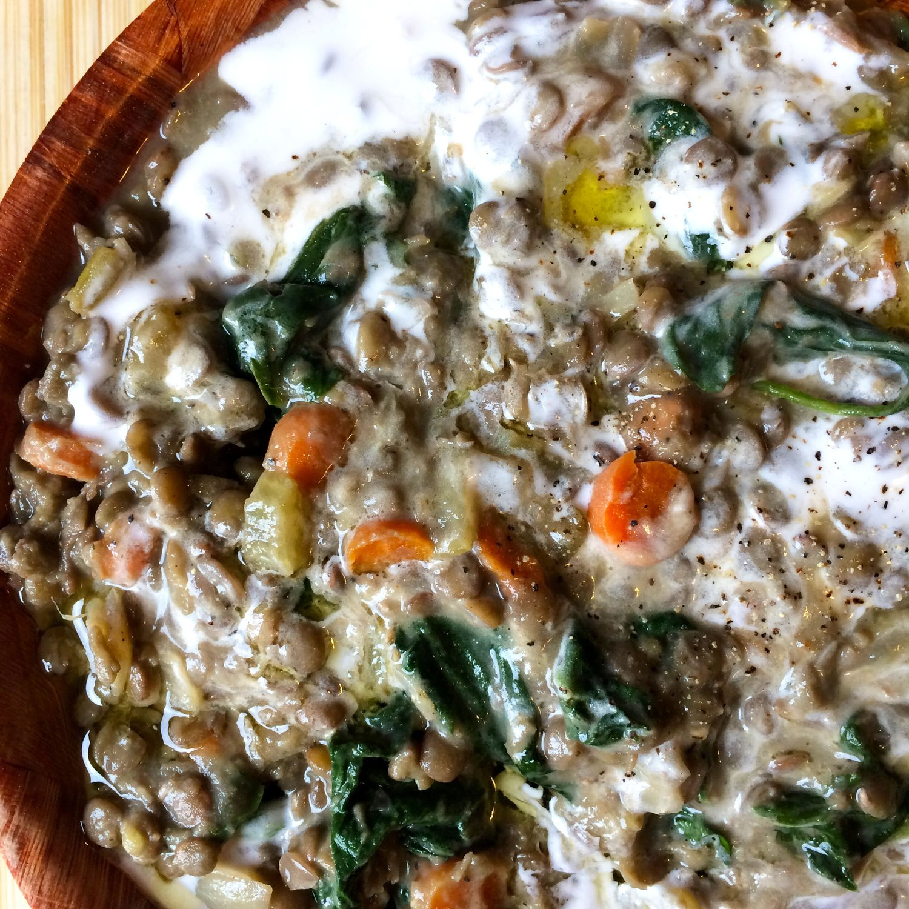

One-Pot Creamy Lentil Stew (vegan, gluten free)


I'm not the biggest fan of lentils. I almost avoid them with great effort. I'm also not a fan of soups most days. I don't know why, but I'm not. Stews are kind of an in between where maybe I'll like them, but maybe I'll just feel the same way as I do soups. Who knows. I'm not riskin it!!
Well last night I risked it. And it was a SUCCESSSS. This is amazing. I want to travel the world advocating about how great lentils are. Particularly lentil stews.
I used a recipe from Pinch of Yum, but tweaked it to my liking & to make it vegan. It has SO much flavor, I don't believe it. Seriously try this to have your taste buds rocked!!
One-Pot Creamy Lentil Stew (vegan, gluten free)
Serves: 6
Adapted from Pinch of Yum's one-pot creamy spinach lentils
-
1 TBSP olive oil
-
half a yellow onion, diced
-
2 carrots, peeled and chopped
-
2 sticks celery, chopped
-
2 TBSP vinegar
-
2 cups uncooked lentils, rinsed
-
1 cup chopped Yukon potatoes (1-2 potatoes)
-
4 cups vegetable broth
-
5-6 sprigs fresh parsley
-
5-6 sprigs fresh thyme
-
4 cups packed fresh baby spinach
-
½ cup canned full fat coconut milk
-
1/2 tsp paprika
-
1/2 tsp cumin
-
salt and pepper to taste
-
olive oil and coconut milk for topping
Heat the olive oil over medium heat in a large pot. Add the chopped onions, carrots, and celery. Sautee everything for 8-10 minutes until the vegetables are soft and light brown. Add the vinegar just before the vegetables are done cooking.
Next, add the lentils, raw potatoes, and broth to the pot. The broth should just cover the lentils. If not, add water to cover. Tie the parsley and thyme together and toss in the pot (you tie them so you can remove them easily later without digging through the pot to find them). Simmer everything for 30-45 minutes, stirring occasionally so nothing burns. Add more water if the level drops below the lentils. Everything is ready once the lentils and potatoes are soft. Remove from heat.
Mash the potatoes against the side of the pot with the back of the wooden spoon to make the mixture creamy. Remove the tied herbs. Add the spinach and stir to cook & incorporate. Then stir in the coconut milk, paprika, and cumin. Season with salt and pepper (Pinch of Yum says be generous with the salt and she is right! This is great with sea salt).
Serve with a drizzle of olive oil and a splash of coconut milk.
Per serving before the drizzle of olive oil & coconut milk when served: 198 calories; 5 g fat, 35 g carbs (14 g fiber), and 13 g protein
